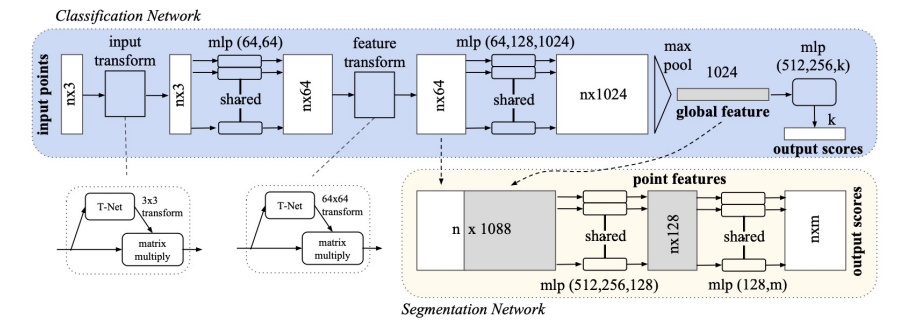

PointNet is a neural network architecture that can process raw point cloud data without preprocessing or feature extraction steps. The main challenge with processing point cloud data is that it is unordered, making it difficult for traditional to do training. PointNet addresses this challenge by extracting global features and ensuring permutation invariance through shared MLP and max-pooling operations. Additionally, PointNet incorporates the Joint Alignment Network to eliminate the influence of translation, rotation, and other factors on point cloud classification and segmentation. The network also concatenates data and global features during segmentation to aggregate local and global information.
The idea of extracting a global feature is essential when doing classification and segmentation tasks because the input data cannot reflect the global information. The main challenge with processing point cloud data is that it is unordered. We want the same output features regardless of the order of the input point cloud. To have a permutation-invariant network, we need a symmetric function for unordered input. To handle the above problem, we apply MLPs on the individual points in the input point cloud to expand the dimension of input. And we achieve permutation-invariant by applying max-pooling operations to aggregate information across the points. The structure of the PointNet is shown in Figure 1. Please follow the instructions in this notebook. 
The Joint Alignment Network (T-Net) can eliminate the influence of translation, rotation, and other factors on point cloud classification and segmentation. The input point cloud passes through this network to obtain an affine transformation matrix. Then, this matrix is multiplied by the original point cloud to obtain a new nx3 point cloud. The same method is applied to the feature space to ensure the invariance of features.
Different from object classification which just needs global feature information, part segmentation needs both global and local feature. To do local and global information aggregation, we use a method similar to U- Net. PointNet aggregate local and global features simply by concentrating the global feature and local feature of each point in the hidden layer of MLP. With this modification, the network can predict each point category relying on global semantics and local geometry.
Apply the transform matrix after trainning
Open classifier.ipynb and segmentation.ipynb will show you the model structure and how we train.